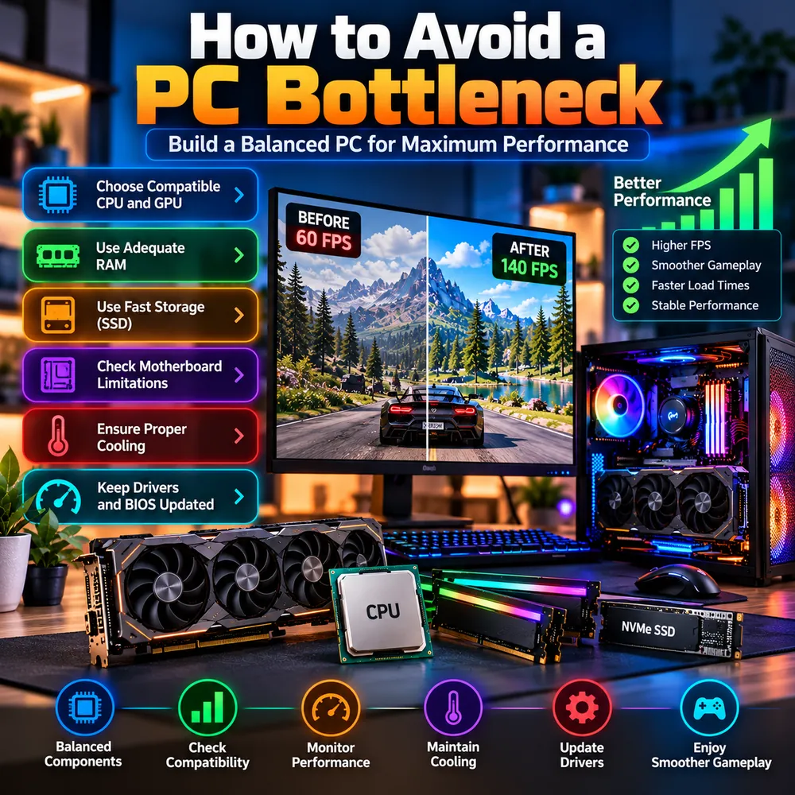

How to Avoid a PC Bottleneck: Build a Balanced PC for Maximum Performance
The cheapest bottleneck fix is the one you never need. This guide explains how to plan a balanced PC build, from picking a compatible CPU and GPU to RAM, storage, motherboard, cooling and updates, so that no single part holds the rest back.

The quick answer
You avoid a PC bottleneck by spending in proportion. Match the processor to the graphics card and your monitor, give the system enough fast memory and an SSD, make sure the motherboard and power supply can support your parts, and keep the whole thing cool and up to date. Perfect balance does not exist, but a sensible one is easy to reach.
Use this checklist as you plan:
- Choose a compatible CPU and GPU for your resolution and goals.
- Use adequate RAM, in dual-channel.
- Use fast storage, an SSD at minimum.
- Check motherboard limitations.
- Ensure proper cooling and a suitable power supply.
- Keep drivers and BIOS updated.
Start with the target, not the parts
Before opening a shopping page, decide what you want the PC to do. The same budget builds very different machines depending on the answer.
- Resolution and refresh rate: 1080p at 144 Hz favors a strong CPU, while 4K at 60 Hz puts nearly all the weight on the GPU. See the resolution bottleneck guide.
- Types of games: competitive and simulation games lean on the CPU. Visually rich single-player games lean on the GPU.
- Other uses: streaming, video editing and multitasking change the CPU and RAM requirements.
Write the target down. Every later decision is easier when you know what balance you are aiming for.
1. Choose a compatible CPU and GPU
There are two meanings of compatibility, and a good build checks both.
- Physical compatibility: the CPU must fit the motherboard socket, the RAM type must match the board, and the graphics card must fit in the case and be supported by the power supply. This is where a GPU and CPU compatibility check starts, and it is a strict yes or no.
- Performance balance: a high-end graphics card paired with a budget processor can leave the GPU waiting, and a top processor with a weak graphics card wastes money. This is the part a CPU GPU compatibility or CPU GPU combo checker style tool tries to estimate.
The practical approach is to shortlist two or three combinations and compare them. Our PC build bottleneck calculator lets you try CPU and GPU pairs at your resolution in a few minutes. This is the question people mean when they ask, "will it bottleneck?" Treat the answer as an estimate, then confirm it with independent benchmarks for the games you play. We cover this in depth in our CPU and GPU pairing guide and our guide to choosing a gaming CPU.
A useful rule: for gaming, put more of the budget into the GPU than the CPU, as long as the processor is modern enough to keep it fed. A CPU that is adequate today may not suit a graphics card you plan to buy later, so consider your upgrade path.
2. Use adequate RAM
Memory has three things to get right:
- Capacity: 16GB is a reasonable baseline for gaming today. 32GB is sensible if you multitask, stream or play memory-hungry titles. See whether 16GB is enough.
- Configuration: two matched sticks in dual-channel usually beat a single stick of the same total size.
- Speed: choose a kit that suits your platform, then enable XMP or EXPO in the BIOS so it actually runs at its rated speed. Very expensive memory is rarely the best use of a limited budget.
Our RAM bottleneck guide explains the details.
3. Use fast storage
Install your operating system and games on an SSD. A mechanical hard drive causes long load times and streaming stutter in modern games, so keep it for archives and backups. An NVMe SSD gives faster load times than a SATA SSD, although the difference in actual FPS is usually small. A solid choice for most builds is a reasonably sized NVMe drive with enough space for your library. Compare options in our SSD vs HDD vs NVMe guide.
4. Check motherboard limitations
The motherboard decides what your system can become later. Check:
- CPU support: socket, chipset and whether a BIOS update is required for your processor.
- Memory support: DDR4 or DDR5, the number of slots and the maximum speed.
- Expansion: a full-length PCIe slot for the graphics card and enough M.2 slots for storage.
- Power delivery: a very cheap board paired with a powerful processor can limit how well the CPU performs under sustained load.
A slightly better board costs little at the start and avoids a full rebuild when you upgrade.
5. Ensure proper cooling and power
Cooling and power are the parts people forget until something goes wrong.
- Cooling: pick a CPU cooler rated for your processor and a case with good airflow, with fans moving air in at the front and out at the back or top. An overheating part slows itself down, which looks exactly like a bottleneck. See thermal throttling vs CPU bottleneck.
- Power supply: follow the wattage and connector recommendations from your graphics card maker, and choose a reputable unit with some headroom. See whether a PSU can cause a bottleneck.
6. Keep drivers and BIOS updated
Install the latest graphics driver, the chipset driver and Windows updates after the build. Update the BIOS carefully, and only when your board vendor recommends it for your CPU or memory, because an interrupted BIOS update can cause trouble. Then enable XMP or EXPO, confirm your monitor is set to its full refresh rate and check that the display cable is plugged into the graphics card.
After the build: verify, do not assume
A new PC can still have a hidden limit, and a quick verification takes ten minutes. Play a demanding game while watching CPU, GPU, RAM and temperature, and compare the results with your calculator estimate. If something looks off, follow our step-by-step bottleneck test, and use our fix guide if it needs tuning.
Mistakes that cause bottlenecks in new builds
- Pairing a flagship GPU with an entry-level CPU to save money.
- Buying fast RAM but never enabling XMP or EXPO.
- Running a single memory stick in single-channel mode.
- Installing games on a hard drive.
- Choosing a power supply without checking the GPU's requirements.
- Plugging the monitor into the motherboard instead of the graphics card.
- Ignoring airflow in a small case.
Conclusion
Avoiding a bottleneck is mostly about planning. Pick your target, shortlist balanced CPU and GPU combinations with a build bottleneck calculator, give the system enough fast RAM and an SSD, choose a board and power supply with room to grow, cool everything properly and keep the software current. You will not reach a mathematically perfect balance, and you do not need to. A sensible one gives smooth gameplay and leaves you a clear upgrade path.
Frequently Asked Questions
How do I avoid a bottleneck when building a PC?
Define your resolution and refresh rate first, choose a CPU and GPU that suit each other, use enough dual-channel RAM, install games on an SSD, check motherboard and power supply support, and make sure cooling is adequate. Then verify with real testing after the build.
Is there a perfectly balanced PC?
No. One component always reaches its limit first. The aim is a sensible balance where the limit falls on the part you prefer, usually the GPU for gaming.
How do I check CPU and GPU compatibility?
Check physical compatibility first, which means socket, RAM type, case fit and power supply. Then check performance balance using a calculator estimate and independent benchmarks for the games you play.
Will a PC build bottleneck calculator guarantee my result?
No. It gives a planning estimate. Real performance depends on the game, resolution, settings, RAM, cooling and drivers, so use the estimate to compare options and confirm with benchmarks.
Should I spend more on the CPU or the GPU for gaming?
For most gaming builds the GPU should take the larger share of the budget, provided the CPU is modern enough to keep it fed. Competitive and simulation games that lean on the processor justify a stronger CPU.